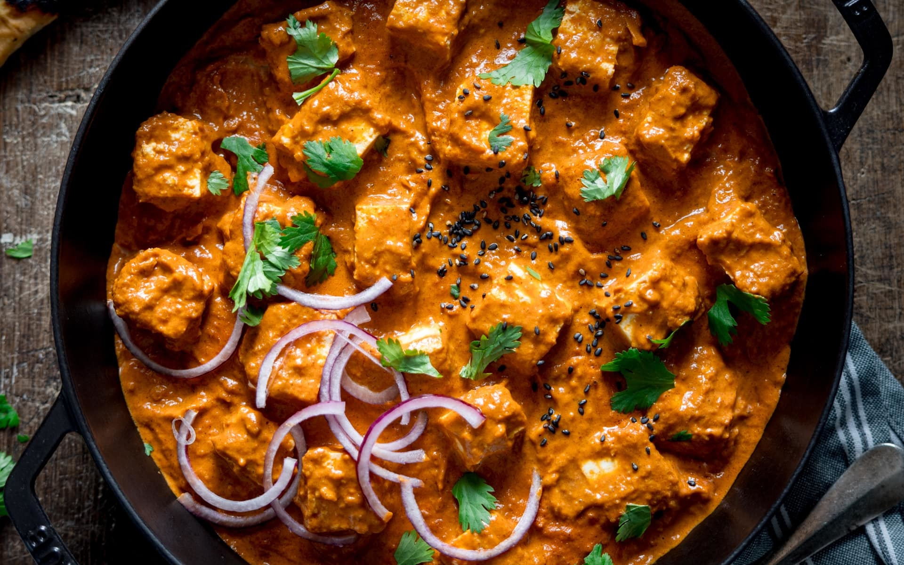

Paneer Curry

Paneer Curry
This vegetarian curry uses chunks of creamy paneer in a fragrant butter-style curry sauce. It's mild enough for the whole family to enjoy, but you can spice up this paneer curry with the addition of some fresh chillies if you like it hotter.
Ingredients:
- 1 large onion, peeled and roughly chopped
- 4 cloves garlic, peeled
- 1 thumb-sized piece fresh ginger, peeled and roughly chopped
- 3 tbsp unsalted butter
- 1 tbsp oil
- ¼ tsp salt
- 1 ½ tbsp garam masala
- 1 tbsp medium-heat curry powder
- 1 tsp paprika
- ½ tsp cinnamon
- 180 ml stock
- 400 ml passata
- 2 tbsp tomato puree
- 2 tsp sugar
- 6 cardamom pods
- 175ml double cream
- 450 g paneer cheese, chopped into bite sized chunks
Method:
- Place the roughly chopped onion, garlic and ginger into a food processor and blend until smooth.
- Heat the butter and oil in a large frying pan over a medium-high heat.
- Add the minced onion, garlic and ginger to the pan and cook for 5-6 minutes, stirring occasionally until the onion starts to brown at the edges of the pan.
- Add the salt, garam masala, curry powder, paprika and cinnamon. Stir and cook for 1-2 minutes, until the spices start to release their fragrance.
- Add the stock, passata, tomato puree, sugar and cardamom.
- Bring to the boil and simmer for 10 minutes until thickened.
- Remove the cardamom then stir in the cream and allow to heat through.
- Carefully stir in the paneer and cook for a further 3 minutes, until the paneer is heated through.